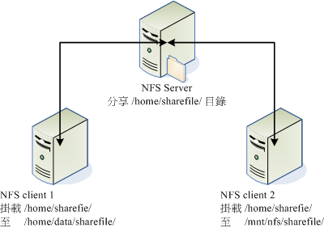
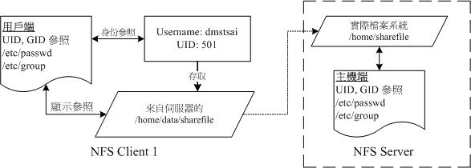
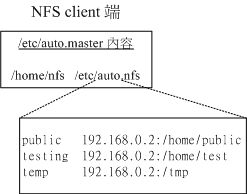

| |
最近更新日期：2009/07/04
本文已不再维护，更新文章请参考这里
|
NFS为 Network FileSystem 的简称，最早之前是由 Sun 这家公司所发展出来的，他的目的就是想让不同的机器、
不同的操作系统可以彼此分享个别的档案啦！目前在 Unix Like 当中用来做为 file server
是相当不错的一个方案喔！基本上， Unix Like 主机连接到另一部 Unix Like 主机来分享彼此的档案时，使用
NFS 要比 SAMBA 这个服务器快速且方便的多了！此外， NFS 的设定真的很简单，几乎只要记得启动 Remote
Procedure Call 这个咚咚 (RPC, 就是 portmap 这个套件啦！) 就一定可以架设的起来！真是不错啊！不过，如果要达成
Windows 与 Linux 之间的沟通，那么还是以 SAMBA 比较容易啊！无论如何， NFS
还是可以做为小公司或学校单位内部 Unix Like 机器共享 file 的一个 Server 喔！
|
 本章的行前准备工作 本章的行前准备工作
NFS 这个藉由网络分享文件系统的服务在架设的时候是很简单的，不过，他最大的问题在于『权限』方面的概念！
因为在客户端与服务器端可能必须要具备相同的账号才能够存取某些目录或档案。
另外，NFS 的启动需要透过所谓的远程过程调用 (RPC)，也就是说，我们并不是只要启动 NFS 就好了，
还需要启动 RPC 这个服务才行啊！因此，你必须要拥有的基础知识有：
NFS 的由来与其功能
在开始进行 NFS 的设定之前，我们得先来了解一下，什么是 NFS 呢？不然讲了一堆也没有用，对吧！ ^_^！
底下就来谈一谈什么是 NFS ，且 NFS 的启动还需要什么样的协议啊！
什么是
NFS (Network FileSystem)
NFS 就是 Network File System 的缩写，最早之前是由
Sun 这家公司所发展出来的。
他最大的功能就是 可以透过网络，让不同的机器、不同的操作系统、可以彼此分享个别的档案
(share files)。所以，您也可以简单的将他看做是一个文件服务器 (file server) 呢！这个 NFS
服务器可以让您的 PC 来将网络远程的 NFS 主机分享的目录，挂载到本地端的机器当中，
在本地端的机器看起来，那个 远程主机的目录就好像是自己的一个磁盘分区槽一样
(partition)！使用上面相当的便利！

图一、NFS 主机分享目录与 Client 挂载示意图
就如同上面的图示一般，当我们的 NFS Server 设定好了分享出来的 /home/sharefile 这个目录后，其他的
NFS Client 端就可以将这个目录挂载到自己系统上面的某个挂载点 (挂载点可以自定义)，例如前面图示中的
NFS client 1 与 NFS client 2 挂载的目录就不相同。我只要在 NFS client 1 系统中进入
/home/data/sharefile 内，就可以看到 NFS Server 系统内的 /home/sharefile 目录下的所有数据了
(当然，权限要足够啊！^_^)！这个 /home/data/sharefile 就好像 NFS client 1 自己机器里面的一个
partition 喔！只要权限对了，那么您可以使用 cp, cd, mv, rm...
等等磁盘或档案相关的指令！真是他X的方便吶！
好的，既然 NFS 是透过网络来进行数据的传输，那么经由
socket pair 的概念你会知道
NFS 应该会使用一些 port 吧？那么 NFS 使用哪个 port来进行传输呢？答案是....不知道！ @_@ ！
因为 NFS 用来传输的 port 是随机选择小于 1024 以下的埠口来使用的。
咦！那客户端怎么知道你服务器端使用那个 port 啊？此时就得要
远程过程调用
(Remote Procedure Call, RPC) 的协定来辅助啦！底下我们就来谈谈什么是 RPC？
什么是
RPC (Remote Procedure Call)
因为 NFS 支持的功能相当的多，而不同的功能都会使用不同的程序来启动，
每启动一个功能就会启用一些 port 来传输数据，因此， NFS 的功能所对应的 port 才没有固定住，
而是采用随机取用一些未被使用的小于 1024 的埠口来作为传输之用。但如此一来又造成客户端想要连上服务器时的困扰，
因为客户端得要知道服务器端的相关埠口才能够联机吧！
此时我们就得需要远程过程调用 (RPC) 的服务啦！ RPC 最主要的功能就是在指定每个
NFS 功能所对应的 port number ，并且回报给客户端，让客户端可以连结到正确的埠口上去。
那 RPC 又是如何知道每个 NFS 的埠口呢？这是因为 当服务器在启动
NFS 时会随机取用数个埠口，并主动的向 RPC 注册，因此 RPC 可以知道每个埠口对应的 NFS
功能，然后 RPC 又是固定使用 port 111 来监听客户端的需求并回报客户端正确的埠口，
所以当然可以让 NFS 的启动更为轻松愉快了！
Tips:
所以你要注意，要启动 NFS 之前，RPC 就要先启动了，否则 NFS 会无法向 RPC 注册。
另外，RPC 若重新启动时，原本注册的数据会不见，因此 RPC
重新启动后，他管理的所有程序都需要重新启动以重新向 RPC 注册。
|  |

图二、NFS 与 RPC 服务及文件系统操作的相关性
如上图所示，当客户端有 NFS 档案存取需求时，他会如何向服务器端要求数据呢？
- 客户端会向服务器端的 RPC (port 111) 发出 NFS 档案存取功能的询问要求；
- 服务器端找到对应的已注册的 NFS daemon 埠口后，会回报给客户端；
- 客户端了解正确的埠口后，就可以直接与 NFS daemon 来联机。
由于 NFS 的各项功能都必须要向 RPC 来注册，如此一来 RPC 才能了解 NFS 这个服务的各项功能之
port number, PID, NFS 在主机所监听的 IP 等等，而客户端才能够透过 RPC 的询问找到正确对应的埠口。
也就是说，NFS 必须要有 RPC 存在时才能成功的提供服务，
因此我们称 NFS 为 RPC server 的一种。事实上，有很多这样的服务器都是向 RPC 注册的，
举例来说，NIS (Network Information Service) 也是 RPC server 的一种呢。
此外，由图二你也会知道，不论是客户端还是服务器端，要使用 NFS 时，两者都需要启动 RPC 才行喔！
更多的 NFS 相关协议信息你可以参考底下网页：
NFS
启动的 RPC daemons
我们现在知道 NFS 服务器在启动的时候就得要向 RPC 注册，所以 NFS 服务器也被称为 RPC server 之一。
那么 NFS 服务器主要的任务是进行文件系统的分享，文件系统的分享则与权限有关。
所以 NFS 服务器启动时至少需要两个 daemons ，一个管理 client 端是否能够登入的问题，
一个管理 client 端能够取得的权限。如果你还想要管理 quota 的话，那么 NFS
还得要再加载其他的 RPC 程序就是了。我们以较单纯的 NFS 主机来说：
- rpc.nfsd：
这个 daemon 主要的功能就是在管理 Client 是否能够登入主机的权限啦，其中还包含这个登入者的 ID 的判别喔！
- rpc.mountd
这个 daemon 主要的功能，则是在管理 NFS 的文件系统哩！当 Client 端顺利的通过 rpc.nfsd
而登入主机之后，在他可以使用 NFS 服务器提供的档案之前，还会经过档案权限
(就是那个 -rwxrwxrwx 与 owner, group 那几个权限啦) 的认证程序！他会去读 NFS 的配置文件
/etc/exports 来比对 Client 的权限，当通过这一关之后 Client
就可以取得使用 NFS 档案的权限啦！
(注：这个也是我们用来管理 NFS 分享之目录的权限与安全设定的地方哩！)
- rpc.lockd (非必要)
这个玩意儿可以用在管理档案的锁定 (lock) 用途。为何档案需要『锁定』呢？
因为既然分享的 NFS 档案可以让客户端使用，那么当多个客户端同时尝试写入某个档案时，
就可能对于该档案造成一些问题啦！这个 rpc.lockd 则可以用来克服这个问题。
但 rpc.lockd 必须要同时在客户端与服务器端都开启才行喔！此外， rpc.lockd
也常与 rpc.statd 同时启用。
- rpc.statd (非必要)
可以用来检查档案的一致性，与 rpc.lockd 有关！若发生因为客户端同时使用同一档案造成档案可能有所损毁时，
rpc.statd 可以用来检测并尝试回复该档案。与 rpc.lockd
同样的，这个功能必须要在服务器端与客户端都启动才会生效。
NFS 的档案访问权限
不知道你有没有想过这个问题，在 图一的环境下，假如我在 NFS client 1 上面以
dmtsai 这个使用者身份想要去存取 /home/data/sharefile/ 这个来自 NFS server 所提供的文件系统时，
请问 NFS server 所提供的文件系统会让我以什么身份去存取？是 dmtsai 还是？
为什么会这么问呢？这是 因为 NFS 本身的服务并没有进行身份登入的识别，
所以说，当你在客户端以 dmtsai 的身份想要存取服务器端的文件系统时，
服务器端会以客户端的使用者
UID 与 GID 等身份来尝试读取服务器端的文件系统。这时有个有趣的问题就产生啦！
那就是 如果客户端与服务器端的使用者身份并不一致怎么办？
我们以底下这个图示来说明一下好了：

图三、NFS 的服务器端与客户端的使用者身份确认机制
当我以 dmtsai 这个一般身份使用者要去存取来自服务器端的档案时，你要先注意到的是：
文件系统的 inode 所记录的属性为 UID, GID 而非账号与群组名。
那一般 Linux 主机会主动的以自己的 /etc/passwd, /etc/group 来查询对应的使用者、组名。
所以当 dmtsai 进入到该目录后，会参照 NFS client 1 的使用者与组名。
但是由于该目录的档案主要来自 NFS server ，所以可能就会发现几个情况：
- NFS server/NFS client 刚好有相同的账号与群组
则此时使用者可以直接以 dmtsai 的身份进行服务器所提供的文件系统之存取。
- NFS server 的 501 这个 UID 账号对应为 vbird
若 NFS 服务器上的 /etc/passwd 里面 UID 501 的使用者名称为 vbird 时，
则客户端的 dmtsai 可以存取服务器端的 vbird 这个使用者的档案喔！只因为两者具有相同的
UID 而已。这就造成很大的问题了！因为没有人可以保证客户端的 UID 所对应的账号会与服务器端相同，
那服务器所提供的数据不就可能会被错误的使用者乱改？
- NFS server 并没有 501 这个 UID
另一个极端的情况是，在服务器端并没有 501 这个 UID 的存在，则此时 dmtsai 的身份在该目录下会被压缩成匿名者，
一般 NFS 的匿名者会以 UID 为 65534 为其使用者，早期的 Linux distributions 这个 65534 的账号名称通常是
nobody ，我们的 CentOS 则取名为 nfsnobody 。
- 如果使用者身份是 root 时
有个比较特殊的使用者，那就是每个 Linux 主机都有的 UID 为 0 的 root 。
想一想，如果客户端可以用 root 的身份去存取服务器端的文件系统时，那服务器端的数据哪有什么保护性？
所以在预设的情况下， root 的身份会被主动的压缩成为匿名者。
总之，客户端使用者能做的事情是与 UID 及其 GID 有关的，那当客户端与服务器端的 UID 及账号的对应不一致时，
可能就会造成文件系统使用上的困扰，这个就是 NFS 文件系统在使用上面的一个很重要的地方！
而在了解使用者账号与 UID 及文件系统的关系之后，要实际在客户端以 NFS 取用服务器端的文件系统时，
你还得需要具有：
- NFS 服务器有开放可写入的权限 (与 /etc/exports 设定有关)；
- 实际的档案权限具有可写入 (w) 的权限。
当你满足了 (1)使用者账号，亦即 UID 的相关身份； (2)NFS 服务器允许有写入的权限；
(3)文件系统确实具有 w 的权限时，你才具有该档案的可写入权限喔！
尤其是身份 (UID) 确认的环节部分，最容易搞错啦！也因为如此，
所以 NFS 通常需要与 NIS
这一个可以确认客户端与服务器端身份一致的服务搭配使用，以避免身份的错乱啊！ ^_^
NFS Server 端的设定
既然要使用 NFS 的话，就得要安装 NFS 所需要的套件了！底下让我们查询一下系统有无安装所需要的套件，
NFS 套件的架构以及如何设定 NFS 主机吧！ ^_^
所需要的套件
以 CentOS 4.x 为例的话，要设定好 NFS 服务器我们必须要有两个套件才行，分别是：
- NFS 主程序：nfs-utils
- RPC 主程序：portmap
portmap
就如同刚刚提的到，我们的 NFS 其实可以被视为一个 RPC 程序，而要启动任何一个 RPC 程序之前，我们都需要做好
port 的对应 (mapping) 的工作才行，这个工作其实就是『 portmap 』这个服务所负责的！也就是说，
在启动任何一个 RPC server 之前，我们都需要启动 portmap 才行！
nfs-utils
就是提供 rpc.nfsd 及 rpc.mountd 这两个 NFS daemons 与其他相关 documents 与说明文件、执行档等的套件！这个就是
NFS 的主要套件啦！一定要有喔！
好了，知道我们需要这两个套件之后，现在干嘛？赶快去您的系统先用 RPM 看一下有没有这两个套件啦！
没有的话赶快用 RPM 或 yum 去安装喔！不然就玩不下去了！
例题：
请问我的主机是以 RPM 为套件管理的 Linux distribution ，例如 Red Hat, CentOS 与
SuSE 等版本，那么我要如何知道我的主机里面是否已经安装了 portmap 与 nfs 相关的套件呢？
答：
简单的使用 rpm -qa | grep nfs 与 rpm -qa | grep portmap 即可知道啦！如果没有安装的话，
在 CentOS 内可以使用『 yum install nfs-utils 』来安装！
|
NFS 的套件结构
NFS 这个咚咚真的是很简单，上面我们提到的 NFS 套件中，配置文件只有一个，执行档也不多，
记录文件也三三两两而已吶！赶紧先来看一看吧！ ^_^
- /etc/exports
这个档案就是 NFS 的主要配置文件了！不过，系统并没有默认值，所以这个档案『
不一定会存在』，您可能必须要使用 vi
主动的建立起这个档案喔！我们等一下要谈的设定也仅只是这个档案而已吶！
- /usr/sbin/exportfs
这个是维护 NFS 分享资源的指令，我们可以利用这个指令重新分享 /etc/exports
变更的目录资源、将 NFS Server 分享的目录卸除或重新分享等等，这个指令是 NFS
系统里面相当重要的一个喔！至于指令的用法我们在底下会再介绍。
- /usr/sbin/showmount
这是另一个重要的 NFS 指令。exportfs 是用在 NFS Server 端，而 showmount
则主要用在 Client 端。这个 showmount 可以用来察看 NFS 分享出来的目录资源喔！
- /var/lib/nfs/*tab
在 NFS 服务器的登录文件都放置到 /var/lib/nfs/ 目录里面，在该目录下有两个比较重要的登录档，
一个是 etab ，主要记录了 NFS 所分享出来的目录的完整权限设定值；另一个 xtab
则记录曾经链接到此 NFS 主机的相关客户端数据。
就说不难吧！主要就是这几个啰！
/etc/exports
配置文件的语法与参数
在开始 NFS 服务器的设定之前，您必须要了解的是， NFS
会直接使用到核心功能，所以你的核心必须要有支持 NFS 才行。
万一如果你的核心版本小于 2.2 版，或者重新自行编译过核心的话，那么就得要很注意啦！
因为你可能会忘记选择 NFS 的核心支持啊！
还好，我们 CentOS 或者是其他版本的 Linux ，预设核心通常是支持 NFS 功能的，
所以你只要确认你的核心版本是目前新的 2.6.x 版，并且使用你的 distribution 所提供的核心，
那应该就不会有问题啦！
至于 NFS 服务器的架设实在很简单， 你只要编辑好主要配置文件 /etc/exports 之后，
先启动 portmap ，然后再启动 nfs ，你的 NFS 就成功了！
不过这样的设定能否对客户端生效？那就得要考虑你权限方面的设定能力了。
废话少说，我们就直接来看看那个 /etc/exports 应该如何设定吧！
某些 distributions 并不会主动提供 /etc/exports 档案，所以请您自行手动建立他吧。
[root@linux ~]# vi /etc/exports
/tmp 192.168.1.0/24(ro) localhost(rw) *.ev.ncku.edu.tw(ro,sync)
# [分享目录] [第一部主机(权限)] [可用主机名] [可用通配符]
|
您看看，这个配置文件有够简单吧！每一行最前面是要分享出来的目录，注意喔！是以目录为单位啊！
然后这个目录可以依照不同的权限分享给不同的主机，像鸟哥上面的例子说明是：
要将 /tmp 分别分享给三个不同的主机或网域的意思。记得主机后面以小括号 () 设计权限参数，
若权限参数不止一个时，则以逗号 (,) 分开。且主机名与小括号是连在一起的喔！
在这个档案内也可以利用 # 来批注呢。
至于主机名的设定主要有几个方式：
- 可以使用完整的 IP 或者是网域，例如 192.168.1.10 或 192.168.1.0/24 ，或
192.168.1.0/255.255.255.0 都可以接受！
- 可以使用主机名，这个主机名要在 /etc/hosts 内或使用 DNS 可以被找到才行啊！重点是可找到 IP
就是了。如果是主机名的话，那么他可以支持通配符，例如 * 或 ? 均可接受。
至于权限方面 (就是小括号内的参数) 常见的参数则有：
- rw：read-write，可擦写的权限；
- ro：read-only，只读的权限；
- sync：数据同步写入到内存与硬盘当中；
- async：数据会先暂存于内存当中，而非直接写入硬盘！
- no_root_squash：
登入 NFS 主机使用分享目录的用户，如果是
root 的话，那么对于这个分享的目录来说，他就具有 root 的权限！
这个项目『极不安全』，不建议使用！
- root_squash：
在登入 NFS 主机使用分享之目录的用户如果是
root 时，那么这个使用者的权限将被压缩成为匿名用户，通常他的 UID 与 GID 都会变成 nobody(nfsnobody)
那个系统账号的身份；
- all_squash：
不论登入 NFS 的使用者身份为何，
他的身份都会被压缩成为匿名用户，通常也就是 nobody(nfsnobody) 啦！
- anonuid：
anon 意指 anonymous (匿名者)
前面关于 *_squash 提到的匿名用户的 UID
设定值，通常为 nobody(nfsnobody)，但是您可以自行设定这个 UID 的值！当然，这个 UID
必需要存在于您的 /etc/passwd 当中！
- anongid：同 anonuid ，但是变成 group ID 就是了！
这是几个比较常见的权限参数，如果你有兴趣玩其他的参数时，请自行 man exports 可以发现很多有趣的数据。
接下来我们利用上述的几个参数来实际思考一下几个有趣的小习题：
思考一：让 root 保有 root 的权限
我想将 /tmp 分享出去给大家使用，由于这个目录本来就是大家都可以读写的，因此想让所有的人都可以存取。
此外，我要让 root 写入的档案还是具有 root 的权限，那如何设计配置文件？
[root@linux ~]# vi /etc/exports
# 任何人都可以用我的 /tmp ，用通配符来处理主机名，重点在 no_root_squash
/tmp *(rw,no_root_squash)
|
参考前面的主机名设定说明，我们可以利用通配符的。这表示无论来自哪里都可以使用我的 /tmp 这个目录。
再次提醒，『 *(rw,no_root_squash) 』这一串设定值中间是没有空格符的喔！而
/tmp 与 *(rw,no_root_squash) 则是有空格符来隔开的！ 特别注意到那个
no_root_squash 的功能！在这个例子中，如果你是客户端，而且您是以 root 的身份登入您的 Linux
主机，那么当您 mount 上我这部主机的 /tmp 之后，您在该 mount 的目录当中，将具有『root 的权限！』
我要将一个公共的目录 /home/public 公开出去，但是只有限定我的局域网络内 192.168.0.0/24
这个网域可以读写，其他人则只能读取：
[root@linux ~]# vi /etc/exports
/tmp *(rw,no_root_squash)
/home/public 192.168.0.0/24(rw) *(ro)
# 继续累加在后面，注意，我有将主机与网域分为两段 (用空白隔开) 喔！
|
上面的例子说的是，当我的 IP 是在 192.168.0.0/24 这个网段的时候，那么当我在 Client 端挂载了
Server 端的 /home/public 后，针对这个被我挂载的目录我就具有可以读写的权限～
至于如果我不是在这个网段之内，那么这个目录的数据我就仅能读取而已，亦即为只读的属性啦！
需要注意的是，之前鸟哥将主机名的通配符与 IP 网段搞错了！
通配符仅能用在主机名的分辨上面，IP 或网段就只能用 192.168.0.0/24 的状况，
不可以使用 192.168.0.* 喔！
我要将一个私人的目录 /home/test 开放给 192.168.0.100 这个 Client 端的机器来使用，那么我就必需这么写：
[root@linux ~]# vi /etc/exports
/tmp *(rw,no_root_squash)
/home/public 192.168.0.0/24(rw) *(ro)
/home/test 192.168.0.100(rw)
# 只要设定 IP 正确即可！
|
这样就设定完成了！而且，只有 192.168.0.100 这部机器才能对 /home/test 这个目录进行存取喔！
我要让 *.linux.org 网域的主机，登入我的 NFS 主机时，可以存取 /home/linux
，但是他们存资料的时候，我希望他们的 UID 与 GID 都变成 40 这个身份的使用者，
假设我 NFS 服务器上的 UID 40 已经有设定妥当：
[root@linux ~]# vi /etc/exports
/tmp *(rw,no_root_squash)
/home/public 192.168.0.0/24(rw) *(ro)
/home/test 192.168.0.100(rw)
/home/linux *.linux.org(rw,all_squash,anonuid=40,anongid=40)
# 如果要开放匿名，那么重点是 all_squash，并且要配合 anonuid 喔！
|
特别注意到那个 all_squash 与 anonuid, anongid 的功能！如此一来，当 test.linux.org
登入这部 NFS 主机，并且在 /home/linux 写入档案时，该档案的所有人与所有群组，就会变成
/etc/passwd 里面对应的 UID 为 40 的那个身份的使用者了！
客户端与主机端具有相同的 UID 与账号：
假设我在 192.168.0.100 登入这部 NFS (IP 假设为 192.168.0.2) 主机，并且我在
192.168.0.100 的账号为 dmtsai 这个身份，同时，在这部 NFS 上面也有 dmtsai 这个账号，
并具有相同的 UID ，果真如此的话，那么：
- 由于 192.168.0.2 这部 NFS 主机的 /tmp 权限为 -rwxrwxrwt ，所以我 (dmtsai 在 192.168.0.100 上面)
在 /tmp 底下具有存取的权限，并且写入的档案所有人为 dmtsai ；
- 在 /home/public 当中，由于我有读写的权限，所以如果在 /home/public 这个目录的权限对于 dmtsai
有开放写入的话，那么我就可以读写，并且我写入的档案所有人是 dmtsai 。但是万一
/home/public 对于 dmtsai 这个使用者并没有开放可以写入的权限时，
那么我还是没有办法写入档案喔！这点请特别留意！
- 在 /home/test 当中，我的权限与 /home/public 相同的状态！还需要 NFS 主机的 /home/test 对于
dmtsai 有开放权限；
- 在 /home/linux 当中就比较麻烦！因为不论您是何种 user ，您的身份一定会被变成 UID=40
这个账号！所以，这个目录就必需要针对 UID = 40 的那个账号名称，修改他的权限才行！
假如我在 192.168.0.100 的身份为 vbird ，但是 192.168.0.2 这部 NFS 主机却没有 vbird
这个账号时，情况会变成怎样呢？
- 我在 /tmp 底下还是可以写入，但是写入的档案所有人变成 nobody 了；
- 我在 /home/public 里面是否可以写入，还需要视 /home/public 的权限而定，不过，反正我的身份就被变成
nobody 了就是；
- /home/test 的观点与 /home/public 相同！
- /home/linux 底下，我的身份就被变成 UID = 40 那个使用者就是了！
假如我在 192.168.0.100 的身份为 root 呢？ root 这个账号每个系统都会有呀！权限变成怎样呢？
- 我在 /tmp 里面可以写入，并且由于 no_root_squash 的参数，改变了预设的
root_squash 设定值，所以在 /tmp 写入的档案所有人为 root 喔！
- 我在 /home/public 底下的身份还是被压缩成为 nobody 了！因为默认属性里面都具有
root_squash 呢！所以，如果 /home/public 有针对 nobody
开放写入权限时，那么我就可以写入，但是档案所有人变成 nobody 就是了！
- /home/test 与 /home/public 相同；
- /home/linux 的情况中，我 root 的身份也被压缩成为 UID = 40 的那个使用者了！
启动 NFS
配置文件搞定后，当然要开始来启动才行啊！而前面我们也提到过，NFS 的启动还需要 portmap 的协助才行啊！
所以赶紧来启动吧！
[root@linux ~]# /etc/init.d/portmap start
# 如果 portmap 本来就已经在执行了，那就不需要启动啊！
[root@linux ~]# /etc/init.d/nfs start
# 有时候可能会出现如下的警告讯息：
exportfs: /etc/exports [3]: No 'sync' or 'async' option specified
for export "192.168.0.100:/home/test".
Assuming default behaviour ('sync').
# 上面的警告讯息仅是在告知因为我们没有指定 sync 或 async 的参数，
# 则 NFS 将默认会使用 sync 的信息而已。妳可以不理他，也可以加入 /etc/exports。
[root@linux ~]# vi /etc/exports
/tmp *(rw,no_root_squash,sync)
/home/public 192.168.0.0/24(rw,sync) *(ro,sync)
/home/test 192.168.0.100(rw,sync)
/home/linux *.linux.org(rw,all_squash,anonuid=40,anongid=40,sync)
[root@linux ~]# /etc/init.d/nfs restart
|
那个 portmap 根本就不需要设定！只要直接启动他就可以啦！ 启动之后，会出现一个
port 111 的 sunrpc 的服务，那就是 portmap 啦！至于 nfs 则会启动至少两个以上的 daemon
出现！然后就开始在监听 Client 端的需求啦！你必须要很注意屏幕上面的输出信息，
因为如果配置文件写错的话，屏幕上会显示出错误的地方喔！
此外，如果妳想要增加一些 NFS
服务器的数据一致性功能时，可能需要用到 rpc.lockd 及 rpc.statd 等 RPC 服务，
那么或许妳可以增加一个服务，那就是 nfslock
[root@linux ~]# /etc/init.d/nfslock start
|
启动之后，请赶快到 /var/log/messages 里面看看有没有被正确的启动呢？
[root@linux ~]# vi /var/log/messages
Sep 22 00:01:37 linux nfs: Starting NFS services: succeeded
Sep 22 00:01:37 linux nfs: rpc.rquotad startup succeeded
Sep 22 00:01:37 linux nfsd[1050]: nfssvc_versbits: +2 +3 +4
Sep 22 00:01:37 linux nfs: rpc.nfsd startup succeeded
Sep 22 00:01:37 linux nfs: rpc.mountd startup succeeded
Sep 22 00:01:37 linux rpcidmapd: rpc.idmapd -SIGHUP succeeded
|
在确认没有问题之后，接下来我们来瞧一瞧那么 NFS 到底开了哪些埠口？
[root@linux ~]# netstat -ultn
Active Internet connections (only servers)
Proto Recv-Q Send-Q Local Address Foreign Address State PID/Program name
tcp 0 0 0.0.0.0:2049 0.0.0.0:* LISTEN -
tcp 0 0 0.0.0.0:803 0.0.0.0:* LISTEN 1047/rpc.rquotad
tcp 0 0 0.0.0.0:111 0.0.0.0:* LISTEN 32503/portmap
tcp 0 0 0.0.0.0:819 0.0.0.0:* LISTEN 1064/rpc.mountd
udp 0 0 0.0.0.0:2049 0.0.0.0:* -
udp 0 0 0.0.0.0:800 0.0.0.0:* 1047/rpc.rquotad
udp 0 0 0.0.0.0:816 0.0.0.0:* 1064/rpc.mountd
udp 0 0 0.0.0.0:111 0.0.0.0:* 32503/portmap
|
注意看到上面喔！总共产生了好多的 port 喔！真是可怕！不过主要的埠口是：
- portmap 启动的 port 在 111；
- NFS 启动的 port 在 2049；
- 其他 rpc.daemons 启动的 port 则是随机产生的，因此需向 port 111 注册。
好了，那我怎么知道每个 RPC 服务的注册状况？没关系，妳可以使用 rpcinfo 来处理的。
[root@linux ~]# rpcinfo [-p] [IP|hostname]
参数：
-p ：显示出所有的 port 与 porgram 的信息；
范例一：显示出目前这部主机的 RPC 状态
[root@linux ~]# rpcinfo -p localhost
program vers proto port
100000 2 tcp 111 portmapper
100000 2 udp 111 portmapper
100011 1 udp 800 rquotad
100011 2 udp 800 rquotad
100011 1 tcp 803 rquotad
100011 2 tcp 803 rquotad
100003 2 udp 2049 nfs
100003 3 udp 2049 nfs
100003 2 tcp 2049 nfs
100003 3 tcp 2049 nfs
100005 1 udp 816 mountd
100005 1 tcp 819 mountd
100005 2 udp 816 mountd
100005 2 tcp 819 mountd
100005 3 udp 816 mountd
100005 3 tcp 819 mountd
# NFS版本 埠口 服务名称
|
仔细瞧瞧，上面出现的信息当中除了程序名称与埠口的对应可以与 netstat -tlunp
输出的结果作比对之外，还需要注意到 NFS 的版本支持！新的 NFS 版本传输速度较快，
由上表看起来，我们的 NFS 至少支持到第 3 版，应该还算合理啦！ ^_^！
如果妳的 rpcinfo 无法输出，那就表示注册的数据有问题啦！可能需要重新启动
portmap 与 nfs 喔！
NFS 的联机观察
在妳的 NFS 服务器设定妥当之后，我们可以先自我测试一下是否可以联机喔！
就是利用 showmount 这个指令来查阅！
[root@linux ~]# showmount [-ae] [hostname|IP]
参数：
-a ：显示目前主机与客户端的 NFS 联机分享的状态；
-e ：显示某部主机的 /etc/exports 所分享的目录数据。
范例一：请显示出刚刚我们所设定好的相关 exports 信息
[root@linux ~]# showmount -e localhost
Export list for localhost:
/tmp *
/home/linux *.linux.org
/home/public (everyone)
/home/test 192.168.0.100
|
很简单吧！所以，当您要扫瞄某一部主机他提供的 NFS 分享的目录时，就使用 showmount -e
IP (或hostname) 即可！非常的方便吧！这也是 NFS client 端最常用的指令喔！
事实上 NFS 关于目录权限设定的数据非常之多！我们可以检查一下 /var/lib/nfs/etab 就知道了！
[root@linux ~]# tail /var/lib/nfs/etab
/home/public *(ro,sync,wdelay,hide,nocrossmnt,secure,root_squash,no_all_squash,
subtree_check,secure_locks,mapping=identity,anonuid=-2,anongid=-2)
# 上面是同一行，可以看出除了 ro, sync, root_squash 等等，
# 其实还有 anonuid 及 anongid 等等的设定！
/tmp *(rw,sync,wdelay,hide,nocrossmnt,secure,no_root_squash,no_all_squash,subtr
ee_check,secure_locks,mapping=identity,anonuid=-2,anongid=-2)
# 同样的，在 /tmp 也有很多的权限相关的参数喔！
|
上面仅仅是一个小范例，只是....怎么 anonuid 会是 -2 啊？
其实那个数值是 65536-2 啦！所以得到 65534 ，比对 /etc/passwd ，
会发现 CentOS 出现的是 nfsnobody 啦！这个账号在不同的版本都可能会不一样的！
另外， 如果有其他客户端挂载了妳的 NFS 文件系统时，
那么该客户端与文件系统信息就会被记录到
/var/lib/nfs/xtab 里头去的！
另外，如果妳想要重新处理 /etc/exports 档案，当重新设定完 /etc/exports 后需不需要重新启动 nfs ？
不需要啦！如果重新启动 nfs 的话，要得要向 RPC 注册！很麻烦～
这个时候我们可以透过 exportfs 这个指令来帮忙喔！
[root@linux ~]# exportfs [-aruv]
参数：
-a ：全部挂载(或卸除) /etc/exports 档案内的设定
-r ：重新挂载 /etc/exports 里面的设定，此外，亦同步更新 /etc/exports
及 /var/lib/nfs/xtab 的内容！
-u ：卸除某一目录
-v ：在 export 的时候，将分享的目录显示到屏幕上！
范例一：重新挂载一次 /etc/exports 的设定
[root@linux ~]# exportfs -arv
exporting 192.168.0.100:/home/test
exporting 192.168.0.0/24:/home/public
exporting *.linux.org:/home/linux
exporting *:/home/public
exporting *:/tmp
范例二：全部都卸除
[root@linux ~]# exportfs -auv
|
要熟悉一下这个指令的用法喔！这样一来，就可以直接重新 exportfs 我们的记录在 /etc/exports 的目录数据啰！
NFS 的安全性
在 NFS 的安全性上面，有些地方是你必须要知道的喔！底下我们分别来谈一谈：
利用 iptables 做大范围联机的限制：
假设我们的 NFS 主要是针对内部网络开放而已，而对于外部网络只有对成大的学术网络开放，亦即是
140.116.0.0/16 ，那么妳可以在鸟哥于 防火墙与 NAT
那个章节提供的 iptables.allow 内增加如下的语法：
[root@linux ~]# vi /usr/local/virus/iptables/iptables.allow
iptables -A INPUT -i $EXTIF -p TCP -s 192.168.0.0/24 --dport 111 -j ACCEPT
iptables -A INPUT -i $EXTIF -p UDP -s 192.168.0.0/24 --dport 111 -j ACCEPT
iptables -A INPUT -i $EXTIF -p TCP -s 140.116.0.0/16 --dport 111 -j ACCEPT
iptables -A INPUT -i $EXTIF -p UDP -s 140.116.0.0/16 --dport 111 -j ACCEPT
|
这样大致上就可以让 192.168.0.0/24 这个 C Class 的网域与 140.116.0.0/16 这个 B Class
的网域到您的主机里面来，而其他的联机就视您的原本的 iptables 的状态而定喔！
那为什么是限制 port 111 而不是每个 RPC server 所开启的埠口呢？
因为 RPC server 所开启的埠口都是随机产生的，要对他开放实在是...
而且客户端想要连上 NFS 服务器之前，都是透过 port 111 来向 NFS 服务器询问联机的埠口的，
所以当然先就 port 111 来进行限制啰！^_^
但是不同的 RPC 毕竟提供的服务不一样，如果妳想要针对某些服务来抵挡的话，
那可以透过 TCP Wrappers 这个根据 program name 来抵挡网络封包的咚咚啰！
还记得我们刚刚使用过 rpcinfo 这个指令吧？
不是会输出很多的 RPC program name 吗？没错！妳可以这样做：
[root@linux ~]# vi /etc/hosts.allow
# 让来自 140.116.44.0/255.255.255.0 的主机可以使用 mountd
mountd: 140.116.44.0/255.255.255.0
[root@linux ~]# vi /etc/hosts.deny
# 让所有人都不能使用 mountd
mountd: ALL
|
为什么使用的是 mountd 呢？去到前一小节的 rpcinfo 指令处瞧一瞧，
妳就会知道为何需要使用到 mountd 啰！^_^
这就牵涉到您的逻辑思考了！怎么设定都没有关系，但是在『便利』与『安全』之间，要找到您的平衡点吶！善用
root_squash 及 all_squash 等功能，再利用 anonuid
等等的设定来规范登入您主机的用户身份！应该还是有办法提供一个较为安全的 NFS 主机的！
另外，当然啦，妳的 NFS 服务器的文件系统之权限设定也需要很留意！
不要随便设定成为 -rwxrwxrwx ，这样会造成你的系统『很大的困扰』的啊！
更安全的 partition 规划：
如果您的工作环境中，具有多部的 Linux 主机，并且预计彼此分享出目录时，那么在安装 Linux
的时候，最好就可以规划出一块 partition 作为预留之用。因为『
NFS 可以针对目录来分享』，因此，您可以将预留的
partition 挂载在任何一个挂载点，再将该挂载点 (就是目录啦！)由 /etc/exports
的设定中分享出去，那么整个工作环境中的其他 Linux 主机就可以使用该 NFS 主机的那块预留的
partition 了！所以，在主机的规划上面，主要需要留意的只有 partition 而已。此外，由于分享的
partition 可能较容易被入侵，最好可以针对该 partition 设定比较严格的参数在 /etc/fstab 当中喔！
NFS 服务器关机前的注意事项：
需要注意的是，由于 NFS 使用的这个 RPC 在 client 端连上服务器时，那么您的服务器想要关机，
那可就会成为『不可能的任务』！如果您的 Server 上面还有 Client 在联机，那么您要关机，
可能得要等到数个钟头才能够正常的关机成功！嗄！真的假的！不相信吗？不然您自个儿试试看！^_^！
所以啰，建议您的 NFS Server 想要关机之前，能先『关掉 portmap 与 nfs 』这两个东西！
如果无法正确的将这两个 daemons 关掉，那么先以 netstat -utlp 找出 PID ，然后以 kill
将他关掉先！这样才有办法正常的关机成功喔！这个请特别特别的注意呢！
当然啦，妳也可以利用 showmount -a localhost 来查出来那个客户端还在联机？
或者是查阅 /var/lib/nfs/rmtab 或 xtab 等档案来检查亦可。找到这些客户端后，
可以直接 call 他们啊！让他们能够帮帮忙先！ ^_^
事实上，客户端以 NFS 联机到服务器端时，如果他们可以下达一些比较不那么『硬』的挂载参数时，
就能够减少这方面的问题喔！相关的安全性可以参考下一小节的
客户端可处理的挂载参数与开机挂载。
NFS 客户端的设定
既然 NFS 服务器最主要的工作就是分享文件系统给网络上其他的客户端，所以客户端当然得要挂载这个玩意儿啰！
此外，主机端可以加设防火墙来保护自己的文件系统，那么客户端挂载该文件系统后，难道不需要保护自己？
呵呵！所以底下我们要来谈一谈几个 NFS 客户端的课题。
远程 NFS 服务器的挂载
你要如何挂载 NFS 服务器所提供的文件系统呢？基本上，可以这样做：
- 确认本地端已经启动了 portmap 服务！
- 扫瞄 NFS 服务器分享的目录有哪些，并了解我们是否可以使用 (showmount)；
- 在本地端建立预计要挂载的挂载点目录 (mkdir)；
- 利用 mount 将远程主机直接挂载到相关目录。
好，现在假设客户端在 192.168.0.100 这部机器上，而服务器是 192.168.0.2 ，
那么赶紧来检查一下我们是否已经有 portmap 的启动，另外远程主机有什么可用的目录呢！
[root@linux ~]# /etc/init.d/portmap start
[root@linux ~]# /etc/init.d/nfslock start
# 一般来说，系统默认会启动 portmap ，不过鸟哥之前关闭过，所以要启动。
# 另外，如果服务器端有启动 nfslock 的话，客户端也要启动才能生效！
[root@linux ~]# showmount -e 192.168.0.2
Export list for 192.168.0.2:
/tmp *
/home/linux *.linux.org
/home/public (everyone) <==这是等一下我们要挂载的目录
/home/test 192.168.0.100
|
接下来我想要将远程主机的 /home/public 挂载到本地端主机的 /home/nfs/public ，
所以我就得要在本地端主机先建立起这个挂载点目录才行啊！然后就可以用 mount
这个指令直接挂载 NFS 的文件系统啰！
[root@linux ~]# mkdir -p /home/nfs/public
[root@linux ~]# mount -t nfs 192.168.0.2:/home/public /home/nfs/public
# 注意一下挂载的语法！『 -t nfs 』指定文件系统类型，
# IP:/dir 则是指定某一部主机的某个提供的目录！
[root@linux ~]# df
Filesystem 1K-blocks Used Available Use% Mounted on
....中间省略....
192.168.0.2:/home/public
10080512 2135072 7433344 23% /home/nfs/public
|
先注意一下挂载 NFS 档案的格式范例喔！呵呵！这样就可以将数据挂载进来啦！请注意喔！
以后， 只要您进入您的目录 /home/nfs/public 就等于到了 192.168.0.2 那部远程主机的
/home/public 那个目录中啰！很不错吧！至于你在该目录下有什么权限？
那就请您回去前一小节查一查权限的思考吧！ ^_^ ！那么如何将挂载的 NFS 目录卸除呢？就使用 umount 啊！
[root@linux ~]# umount /home/nfs/public
|
客户端可处理的挂载参数与开机挂载
瞧！客户端的挂载工作很简单吧！不过不晓得你有没有想过，如果你刚刚挂载到本机 /home/nfs/public
的文件系统当中，含有一支 script ，且这支 script 的内容为『 rm -rf / 』且该档案权限为 555 ，
夭寿～如果你因为好奇给他执行下去，可有的你受的了～因为整个系统都会被杀光光！真可怜！
所以说，除了 NFS 服务器需要保护之外，我们取用人家的 NFS 文件系统也需要自我保护才行啊！
那要如何自我保护啊？可以透过 mount 的指令参数喔！包括底下这些主要的参数可以尝试加入：
| 参数 | 参数代表意义 | 系统默认值 |
suid
nosuid | 晓得啥是 SUID 吧？如果挂载的 partition 上面有任何 SUID 的 binary 程序时，
你只要使用 nosuid 就能够取消 SUID 的功能了！嗄？不知道什么是 SUID ？那就不要学人家架站嘛！@_@！
赶紧回去基础学习篇复习一下程序与资源管理啦！ |
suid |
rw
ro | 你可以指定该 partition 是只读 (ro) 或可擦写喔！ |
rw |
dev
nodev | 是否可以保留装置档案的特殊功能？一般来说只有 /dev
才会有特殊的装置，因此你可以选择 nodev 喔！ | dev |
exec
noexec | 是否具有执行 binary file 的权限？
如果你想要挂载的仅是数据区 (例如 /home)，那么可以选择 noexec 啊！ | exec |
user
nouser | 是否允许使用者进行档案的挂载与卸除功能？
如果要保护文件系统，最好不要提供使用者进行挂载与卸除吧！ | nouser |
auto
noauto | 这个 auto 指的是『mount -a』时，会不会被挂载的项目。
如果你不需要这个 partition 随时被挂载，可以设定为 noauto。 | auto |
一般来说，如果你的 NFS 服务器所提供的只是类似 /home 底下的个人资料，
应该不需要可执行、SUID 与装置档案，因此当你在挂载的时候，可以这样下达指令喔：
[root@linux ~]# mount -t nfs -o nosuid,noexec,nodev,rw \
> 192.168.0.2:/home/public /home/nfs/public
[root@linux ~]# mount
192.168.0.2:/home/public on /home/nfs/public type nfs
(rw,noexec,nosuid,nodev,addr=192.168.0.2)
|
这样一来你所挂载的这个文件系统就只能作为资料存取之用，相对来说，对于客户端是比较安全一些的。
所以说，这个 nosuid, noexec, nodev 等等的参数可得记得啊！
关于 NFS 特殊的挂载参数
除了上述的 mount 参数之外，其实针对 NFS 服务器，咱们的 Linux 还提供不少有用的额外参数喔！
因为 NFS 使用的是 RPC 服务，这个 RPC 必须要客户端与服务器端两者都有启动 RPC 才能运作。
在一般的模式底下，你想要在客户端挂载服务器端的 NFS 文件系统时，一次指令只能挂载一次，
如果该次挂载由于某些问题 (例如服务器未开机、RPC忘记开等等) 导致无法顺利挂载时，
你只能等到联机逾时 (time out) 后，才能够继续工作。
另外，当建立联机后，RPC 会不断的在客户端与服务器两者之间进行呼叫，
此时如果有一部主机失去联机，那么 RPC 将会持续不断的呼叫，直到服务器或客户端恢复联机为止。
此一行为将导致 RPC 服务出现延迟问题，
结果常常就造成你在执行 df 或者是 mount 等指令时，出现『等等等等』的情况～
这....真是要命！
为了避免这些困扰，我们还有一些额外的 NFS 挂载参数可用！例如：
| 参数 | 参数功能 | 预设参数 |
fg
bg | 当执行挂载时，该挂载的行为会在前景 (fg) 还是在背景 (bg) 执行？
若在前景执行时，则 mount 会持续尝试挂载，直到成功或 time out 为止，若为背景执行，
则 mount 会在背景持续多次进行 mount ，而不会影响到前景的程序操作。
如果你的网络联机有点不稳定，或是服务器常常需要开关机，那建议使用 bg 比较妥当。 | fg |
soft
hard | 上头不是谈到挂载时会使用 RPC 呼叫吗？
如果是 hard 的情况，则当两者之间有任何一部主机脱机，则 RPC 会持续的呼叫，直到对方恢复联机为止。
如果是 soft 的话，那 RPC 会在 time out 后『重复』呼叫，而非『持续』呼叫，
因此系统的延迟会比较不这么明显。同上，如果你的服务器可能开开关关，建议用 soft 喔！ |
hard |
| intr | 当你使用上头提到的 hard 方式挂载时，若加上 intr 这个参数，
则当 RPC 持续呼叫中，该次的呼叫是可以被中断的 (interrupted)。 | 没有 |
rsize
wsize | 读出(rsize)与写入(wsize)的区块大小 (block size)。
这个设定值可以影响客户端与服务器端传输数据的缓冲记忆容量。一般来说，
如果在局域网络内 (LAN) ，并且客户端与服务器端都具有足够的内存，那这个值可以设定大一点，
比如说 32768 (bytes) 等，提升缓冲记忆区块将可提升 NFS 文件系统的传输能力！
但要注意设定的值也不要太大，最好是达到网络能够传输的最大值为限。 |
rsize=1024
wsize=1024 |
更多的参数可以参考 man nfs 的输出数据喔！
通常如果你的 NFS 是用在高速运作的环境当中的话，那么可以建议加上这些参数的说：
[root@linux ~]# mount -t nfs -o nosuid,noexec,nodev,rw \
> bg,soft,rsize=32768,wsize=32768 \
> 192.168.0.2:/home/public /home/nfs/public
|
则当你的 192.168.0.2 这部服务器因为某些因素而脱机时，你的 NFS 可以继续在背景当中重复的呼叫！
直到 NFS 服务器再度上线为止。这对于系统的持续操作还是有帮助的啦！
当然啦， 那个 rsize 与 wsize 的大小则需要依据你的实际网络环境而定喔！
要将 NFS 在开机的时候就挂载，该如何是好？就修改 /etc/fstab 即可啊！
这个应该不用多说吧！你应该要了解的！举例来说，像上述的挂载方式的话，你就得要这样做：
[root@linux ~]# vi /etc/fstab
192.168.0.2:/home/public /home/nfs/public nfs nosuid,noexec,nodev,rw,
bg,soft,rsize=32768,wsize=32768 0 0
# 注意！上面的设定是同一行喔！不要搞错啰！ ^_^
|
无法挂载的原因分析
如果客户端就是无法挂载服务器端所分享的目录时，到底是发生什么问题？你可以这样分析看看：
- 使用者或客户端身份权限不符：
以上面的例子来说明，我的 /home/test 只能提供 192.168.0.0/24 这个网域，所以如果我在 192.168.0.2
这部服务器中，以 localhost (127.0.0.1) 来挂载时，就会无法挂载上，这个权限概念没问题吧！
那么您可以试试看：
[root@linux ~]# mount -t nfs localhost:/home/test /home/nfs
mount: localhost:/home/test failed, reason given by server: Permission denied
|
看到 Permission denied 了吧？没错啦～权限不符啦！如果确定您的 IP 没有错误，那么请通知服务器端，
请管理员将你的 IP 加入 /etc/exports 这个档案中。
- 服务器或客户端某些服务未启动：
这个最容易被忘记了！就是忘记了启动 portmap 这个服务啦！如果您发现您的 mount 的讯息是这样：
[root@linux ~]# mount -t nfs localhost:/home/test /home/nfs
mount: RPC: Port mapper failure - RPC: Unable to receive
[root@linux ~]# mount -t nfs localhost:/home/test /home/nfs
mount: RPC: Program not registered
|
要嘛就是 portmap 忘记开，要嘛就是服务器端的 nfs 忘记开！解决的方法就是去启动这两个咚咚啦！
- 被防火墙档掉了：
这个也很容易忘记了！那就是重新设定一下您的防火墙，这包含了两部份，包括 iptables 与
TCP_Wrappers ！因为我们启动了 portmap ，这个东西有两个数据需要分享出来，一个是 port 111
需要提供出去，因此您的 iptables 规则当中，需要开放这个 port 喔！
自动挂载 autofs 的使用
在传统的 NFS 文件系统的使用当中，如果客户端要使用服务器端所提供的 NFS 文件系统时，
要嘛就是得在 /etc/fstab 当中设定开机时挂载，要嘛就得要手动利用 mount 来挂载。
此外，客户端得要预先手动的建立好挂载点目录，然后挂载上来。
不过有个小问题，我们知道 NFS 服务器与客户端的联机或许可能不会永远存在，
而 RPC 这个服务又挺讨厌的，如果挂载了 NFS 服务器后，任何一方脱机都可能造成另外一方老是在等待逾时～
而且，挂载的 NFS 文件系统可能又不是常常被使用，但若不挂载的话，有时候要使用又得通知系统管理员，
这又很不方便....啊！好讨厌的感觉啊～@_@
换个思考的角度：
- 可不可以让客户端在有使用到 NFS 文件系统的需求时才挂载？
- 并且不需要事先建立挂载点？
- 另外，当 NFS 文件系统使用完毕后，可不可以让 NFS 自动卸除，以避免可能的 RPC 错误？
呵呵！好主意！在现在的 Linux 环境下这是可以达成的理想！用的就是 autofs 这个服务啦！
autofs 可以预先定义好客户端『预计挂载来自服务器端的上层目录』，以及其相关的对应 NFS 服务器分享目录。
至于在该目录底下的对应目录则可以不需要额外设定。讲这样或许妳有点模糊，让我们拿底下这个图示来看看：

图四、自动挂载的配置文件内容
如上图所示，我们的 autofs 主要配置文件为
/etc/auto.master，这个档案的内容很简单，
如上所示，我只要定义出最上层目录 (/home/nfs) 即可，至于后续的档案则是该目录底下各次目录的对应。
在 /etc/auto.nfs (这个档案的档名可自定义) 里面则可以定义出每个次目录所欲挂载的远程服务器目录！
然后：『当我们在客户端要使用 /home/nfs/public 的数据时，此时 autofs 才会去 192.168.0.2
挂载 /home/public ！』且『当隔了 5 分钟没有使用该目录下的数据后，
则 /home/nfs/public 将会主动的卸除』。
很不错用的一个工具吧！那就让我们在客户端来玩一玩吧！
建立主要配置文件 /etc/auto.master
这个主要配置文件的内容很简单，只要有默认目录及『数据对应文件』即可。
那个数据对应文件的文件名是可以自行设定的，在鸟哥这个例子当中我使用 /etc/auto.nfs 来命名。
[root@linux ~]# vi /etc/auto.master
/home/nfs /etc/auto.nfs
[root@linux ~]# mkdir /home/nfs
# 注意！此时 /home/nfs 内并没有其他的目录存在喔！
|
刚刚我们所指定的 /etc/auto.nfs 是自行设定的，所以这个档案是不存在的。
那么这个档案的格式是如何呢？妳可以这样看：
[本地端目录] [-挂载参数] [服务器所提供的目录]
参数：
[本地端目录] ：指的就是在 /etc/auto.master 内指定的目录之次目录
[-挂载参数] ：就是前一小节提到的 rw,bg,soft 等等的参数啦！可有可无；
[服务器所提供的目录] ：例如 192.168.0.2:/home/public 等
[root@linux ~]# vi /etc/auto.nfs
public -rw,bg,soft,rsize=32768,wsize=32768 192.168.0.2:/home/public
testing -rw,bg,soft,rsize=32768,wsize=32768 192.168.0.2:/home/test
temp -rw,bg,soft,rsize=32768,wsize=32768 192.168.0.2:/tmp
# 参数部分，只要最前面加个 - 符号即可！
|
这样就可以建立对应了！要注意的是，那些 /home/nfs/public 是不需要事先建立的！
咱们的 autofs 会事情况来处理喔！好了，接下来让我们看看如何实际运作吧！
配置文件设定妥当后，当然就是要启动 autofs 啦！
[root@linux ~]# /etc/init.d/autofs start
|
假设妳目前并没有挂载任何来自 192.168.0.2 这部 NFS 服务器的目录，好了，
让我们实际来观察看看，如果我要进入 /home/nfs/public 时，文件系统会如何变化呢？
[root@linux ~]# mount; df
# 妳不会看到任何跟 192.168.0.2 这部主机有关的 NFS 挂载信息喔！
[root@linux ~]# cd /home/nfs/public
[root@linux public]# mount; df
192.168.0.2:/home/public on /home/nfs/public type nfs (rw,bg,soft,
rsize=32768,wsize=32768,addr=140.116.44.179)
# 上面的输出是同一行！瞧！突然出现这个玩意儿！
Filesystem 1K-blocks Used Available Use% Mounted on
192.168.0.2:/home/public
10080488 2144288 7424136 23% /home/nfs/public
# 档案的挂载也出现没错！
[root@linux public]# pwd
/home/nfs/public
# 这个目录突然被生出来了！ ^_^
|
呵呵！真是好啊！如此一来，如果真的有需要用到该目录时，系统才会去相对的服务器上面挂载！
若是一阵子没有使用，那么该目录就会被卸除呢！这样就减少了很多不必要的使用时机啦！
还不错用吧！ ^_^
案例演练
假设环境：
- 假设我的 Linux 主机为 192.168.0.100 这一部；
- 预计将 /tmp 以可擦写，并且不限制使用者身份的方式分享给所有 192.168.0.0/24 这个网域中的所有 Linux 工作站；
- 预计开放 /home/nfs 这个目录，使用的属性为只读，可提供除了网域内的工作站外，向外亦提供数据内容；
- 预计开放 /home/upload 做为 192.168.0.0/24 这个网域的数据上传目录，其中，这个
/home/upload 的使用者及所属群组为 nfs-upload 这个名字，他的 UID 与 GID 均为 210；
- 预计将 /home/andy 这个目录仅分享给 192.168.0.50 这部 Linux 主机，以提供该主机上面
andy 这个使用者来使用，也就是说， andy 在 192.168.0.50 及 192.168.0.100 均有账号，且账号均为
andy ，所以预计开放 /home/andy 给 andy 使用他的家目录啦！
实地演练：
好了，那么请您先不要看底下的答案，先自己动笔或者直接在自己的机器上面动手作作看，等到得到您要的答案之后，
再看底下的说明吧！
- 首先，就是要建立 /etc/exports 这个档案的内容啰，您可以这样写吧！
[root@linux ~]# vi /etc/exports
/tmp 192.168.0.0/24(rw,no_root_squash)
/home/nfs 192.168.0.0/24(ro) *(ro,all_squash)
/home/upload 192.168.0.0/24(rw,all_squash,anonuid=210,anongid=210)
/home/andy 192.168.0.50(rw)
|
- 再来，就是要建立每个对应的目录的实际 Linux 权限了！我们一个一个来看：
1. /tmp
[root@linux ~]# ll -d /tmp
drwxrwxrwt 5 root root 20480 Sep 22 22:52 /tmp
2. /home/nfs
[root@linux ~]# mkdir -p /home/nfs
[root@linux ~]# chmod 755 -R /home/nfs
# 修改较为严格的档案权限将目录与档案设定成只读！不能写入的状态，会更保险一点！
3. /home/upload
[root@linux ~]# groupadd -g 210 nfs-upload
[root@linux ~]# useradd -g 210 -u 210 -M nfs-upload
# 先建立对应的账号与组名及 UID 喔！
[root@linux ~]# mkdir -p /home/upload
[root@linux ~]# chown -R nfs-upload:nfs-upload /home/upload
# 修改拥有者！如此，则用户与目录的权限都设定妥当啰！
4. /home/andy
[root@linux ~]# ll -d /home/andy
drwx------ 3 andy andy 4096 Oct 28 13:37 andy
|
这样子一来，权限的问题大概就可以解决啰！
- 启动 portmap 与 nfs 服务：
[root@linux ~]# /etc/init.d/portmap start
[root@linux ~]# /etc/init.d/nfs start
[root@linux ~]# /etc/init.d/nfslock start
|
- 在 192.168.0.50 这部机器上面演练一下：
1. 确认远程服务器的可用目录：
[root@linux ~]# /etc/init.d/portmap start
[root@linux ~]# /etc/init.d/nfslock start
[root@linux ~]# showmount -e 192.168.0.100
Export list for 192.168.0.100:
/tmp 192.168.0.*
/home/nfs (everyone)
/home/upload 192.168.0.*
/home/andy 192.168.0.50
2. 建立挂载点：
[root@linux ~]# mkdir -p /home/zzz/tmp
[root@linux ~]# mkdir -p /home/zzz/nfs
[root@linux ~]# mkdir -p /home/zzz/upload
[root@linux ~]# mkdir -p /home/zzz/andy
3. 实际挂载：
[root@linux ~]# mount -t nfs 192.168.0.100:/tmp /home/zzz/tmp
[root@linux ~]# mount -t nfs 192.168.0.100:/home/nfs /home/zzz/nfs
[root@linux ~]# mount -t nfs 192.168.0.100:/home/upload /home/zzz/upload
[root@linux ~]# mount -t nfs 192.168.0.100:/home/andy /home/zzz/andy
|
整个步骤大致上就是这样吶！加油喔！
重点回顾
- Network FileSystem (NFS) 可以让主机之间透过网络分享彼此的档案与目录；
- NFS 主要是透过 RPC 来进行 file share 的目的，所以 Server 与 Client 的 RPC 一定要启动才行！
- NFS 主机可以控制联机的 Client 端的登入与权限；
- NFS 的配置文件就是 /etc/exports 这个档案；
- NFS 的权限可以观察 /var/lib/nfs/etab，至于的重要登录档可以参考 /var/lib/nfs/xtab
这个档案，还包含相当多有用的信息在其中！
- NFS 服务器与客户端的使用者账号名称、UID 最好要一致，可以避免权限错乱：
- NFS 服务器预设对客户端的 root 进行权限压缩，通常压缩其成为 nfsnobody 或 nobody。
- NFS 主机要关机之前，请务必先关闭 portmap 与 nfs server ，否则关机无法顺利成功；
- NFS 主机在更动 /etc/exports 这个档案之后，可以透过 exportfs 这个指令来重新挂载分享的目录！
- 可以使用 rpcinfo 来观察 RPC program 之间的关系！！！
- NFS 主机在设定之初，就必须要考虑到 client 端登入的权限问题，很多时候无法写入或者无法进行分享，主要是
Linux 实体档案的权限设定问题所致！
- NFS 的防火墙设定可以透过控制 RPC 的主要 port ，亦即是 111 这个 port 来管理！此外，亦可透过 TCP_Wrappers 来管理！
- NFS 客户端只要成功 mount NFS 主机分享的目录之后，使用上面就好像自己的 partition 一般；
- NFS 客户端可以透过使用 showmount, mount 与 umount 来使用 NFS 主机提供的分享的目录！
- NFS 亦可以使用挂载参数，如 bg, soft, rsize, wsize, nosuid, noexec, nodev 等参数，
来达到保护自己文件系统的目标！
- 自动挂载的 autofs 服务可以在客户端需要 NFS 服务器提供的资源时才挂载。
- 本章与 LPI 之间的关系：
在 LPI 网站 http://www.lpi.org
里面提到的，关于 NFS 的考试题库的地方，只有在 LPI level 1 的 102 ，里面的
topic 113 Networking Services ，第四点当中，简易的 NFS 设定。强调的是『应试者需了解
NFS 的设定、启动与关闭的关系』至于会考的档案与指令可能有这些：
- /etc/exports
- /etc/fstab
- mount
- umount
课后练习
- NFS 的主要配置文件为何？而在该档案内主要设定项目为何？
主要的配置文件为 /etc/exports 而至于其设定的内容项目在每一行当中则为：
- 分享的目录
- 针对此分享目录开放的主机或 IP或网域
- 针对这部主机所开放的权限参数！
- 在 NFS 主要的配置文件当中仅有少许的参数说明，至于预设的参数说明则没有在该档案当中出现，
请问，如果要查阅更详细的分享出来的档案的属性，要看那个档案？/li>
/var/lib/nfs/etab
- 如果已经启动了 nfs 这个服务器，但是却又修改过主要配置文件，请问可以使用那个指令来重新挂载分享出来的目录与
client 端权限的设定值？
透过使用 exportfs ，可以加上 -a 或者是 -rv 这两个参数来重新挂载！如 exportfs -rv
- 在 client 端如果要挂载 NFS 所提供分享的档案，可以使用那个指令？
那自然就是 mount 啦！还有卸除是 umount 喔！
- 在 NFS 主要配置文件当中，可以透过那个参数来控制不让
client 端以 root 的身份使用您所分享出来的目录与档案？
可以在 /etc/exports 当中的参数项目，设定『 root_squash 』来控制压缩 root 的身份喔！
- 我在 client 端挂载了 NFS Server 的某个目录在我的 /home/data
底下，当我执行其中某个程序时，却发现我的系统被破坏了？您认为可能的原因为何？
该如何克服这样的问题，尤其是当我的 Client 端主机其实是多人共享的环境，
怕其他的使用者也同样发生类似的问题呢？！
- 可能由于您挂载进来的 NFS Server 的 partition 当中具有 SUID
的文件属性，而您不小心使用了该执行档，因此就可能会发生系统被破坏的问题了！
- 可以将挂载进来的 NFS 目录的 SUID 功能取消！例如：
mount -t nfs -o nosuid,ro server:/directory /your/directory
参考数据
2002/11/17：第一次完成
2003/03/09：修改部分内容，并且新增 LPI 相关性与重点整理部分！
2003/09/10：又重新修改版面，以及新增主机的规划等部分。
2006/09/19：将旧的文章移动到 此处
2006/09/22：加入了 autofs 等等的数据喔！
2007/02/27：原本 rsize 定义为 8192，但最近看一些文献，应该改为 32768 比较妥当。
2009/07/04：在最后的案例演练部分， IP 不可使用星号 (*) 的通配符！感谢讨论区网友acer07的回报！
|
|